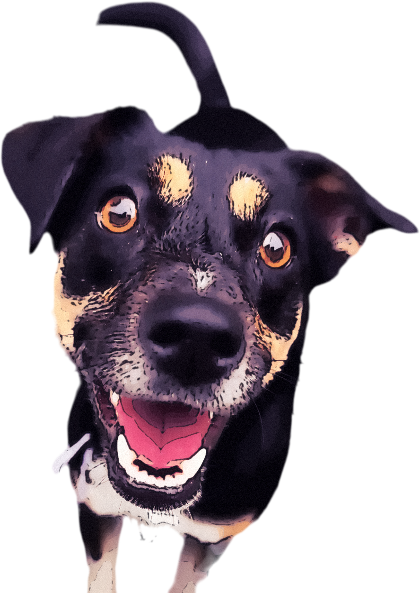
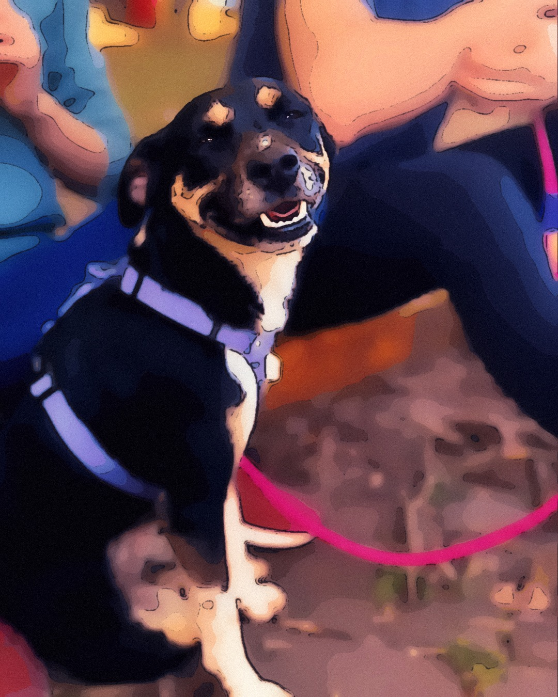
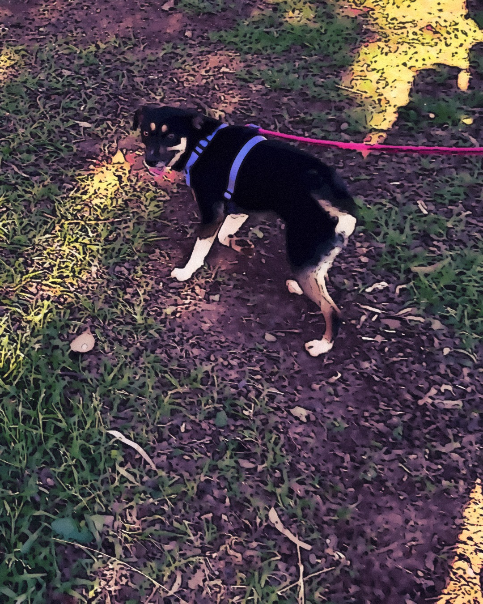
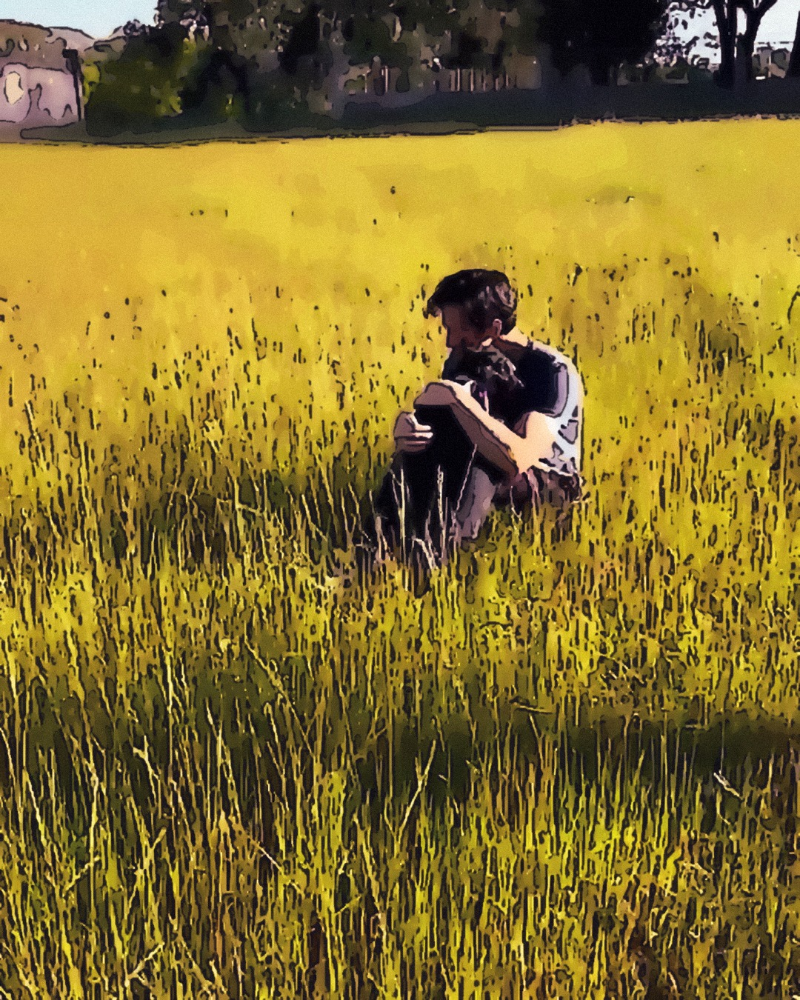
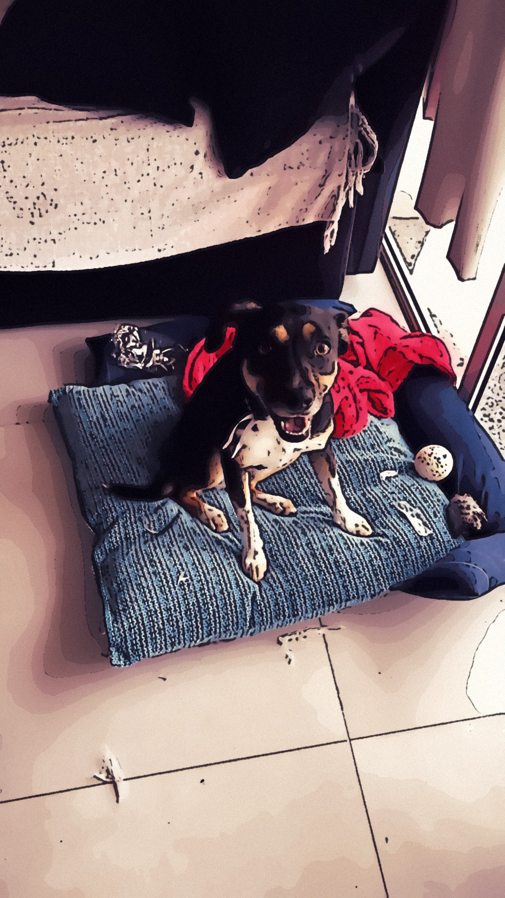

Missão 1:
a grande fuga
a grande fuga
ZoeVI
6 dias de campanha
Passo Fundo/RS
Passo Fundo/RS
lançado antes
do GTA 6.
do GTA 6.

Recorde:
2 km em 7 min
2 km em 7 min

Missão
cumprida
cumprida

Nova missão:
ajudar outros
ajudar outros